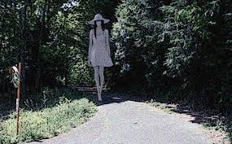

八尺大人

事件地點
日本
描述
在原版傳說中，正值高中時期的主角經常趁著寒暑假返回鄉村祖父家度假。某日主角在祖父家靠近庭院的走廊放鬆時，無意間從庭院的籬笆頂看見移動的寬邊帽，隨後在籬笆的縫隙窺見頭戴寬邊帽、身穿白衣邊發出「popopo」怪聲的高大女子路過。待看呆的主角回神時，女子的身影和怪聲也隨之消失了。
主角在客廳向祖父母聊起此事，祖父母聞言臉色大變，追問細節後強烈要求他今晚留宿此處，請求法力高強的老婆婆（下述簡稱K婆）協助處理此事，同時道出主角被八尺大人迷惑，還有八尺大人每隔數年或十幾年便會現身作祟害人的實情。
主角從抵達現場的K婆手裡取得符咒，偕同祖父母和K婆前往二樓臥室（房間裡有電視）。為了防範八尺大人，該房間特地用貼了符咒的報紙封住窗戶，四個角落各別擺著一小堆鹽，房間裡擺放一尊佛像，祖父母還準備了內急用的便器和飢餓時可食用的零食與飯糰給主角。
祖父母和K婆再三叮囑「天黑後至早上7點來臨前絕不可打開房門外出，這段期間不會有人和他對話，也絕不可隨便應話」、「必須符咒不離身，有緊急狀況則向佛像祈禱」，便逕自下樓。當天夜晚主角出於恐懼，雖開了電視但看不下去，轉而用棉被摀住自己，不自覺間昏睡過去，於半夜一點多醒來時剛好聽見外面輕敲窗戶，還有祖父關切要他別勉強的聲音，但隨即想起祖父母和K婆離開房間前的叮囑，警覺這個說話的聲音主人並非真正的祖父（此時窗外再度傳來「popopo」的怪聲，房間角落的鹽堆開始從頂端變黑），遂向佛像默念祈禱直至再度昏睡。第二天早晨，醒來的主角從電視畫面確認時間已是早晨時段，卻發現原本擺放房間角落的鹽堆全都變黑了。
祖母和K婆表達關切後，主角偕同祖父、父親及其他男性血緣親屬（主角的遠親）、K婆乘坐上九人座的休旅車，眾人圍住並囑咐主角手持符咒，抵達目的地前千萬不可睜眼偷看，K婆則為保護主角等人開始誦經。行車過程中，主角出於好奇眯眼瞄向車窗，見及穿著白色洋裝的巨大身影準備做出低頭的動作，及時因為旁人提醒而連忙閉眼握緊符咒，窗外也再度傳來敲打窗戶的聲音。為了和八尺大人抗衡，K婆加大誦經聲量，直至一行人抵達目的地且八尺大人的聲音消失，確認躲過八尺大人才鬆口氣；主角則發現手持的護身符已經變成全黑，從K婆手裡換得新護身符，轉乘父親的汽車離開鄉下返回住家。
事後主角得知當初之所以招集祖父、父親及男性遠親們在白天共乘車護鎮，是為了溷淆八尺大人的判斷兼顧及白天行動的安全性較高，祖父和父親當時更是做好了代替主角犧牲的覺悟，同時確認了事發當晚祖父沒有上樓關切的事實。父親更道出兒時友人被八尺大人盯上遇害、其他被盯上的當事者為此搬遷他處的往事，還特別交代主角日後千萬別再前往祖父家。
事發數年，主角的祖父顧及孫子安危，病故前交代千萬不可讓主角參加葬禮。但在祖父病故兩年後，主角接獲祖母來電告知封印八尺大人的地藏廟遭到破壞、而且該條路還能通往主角家的消息，故事便在主角半疑半信、擔心日後將會再遇八尺大人的獨白中做結。